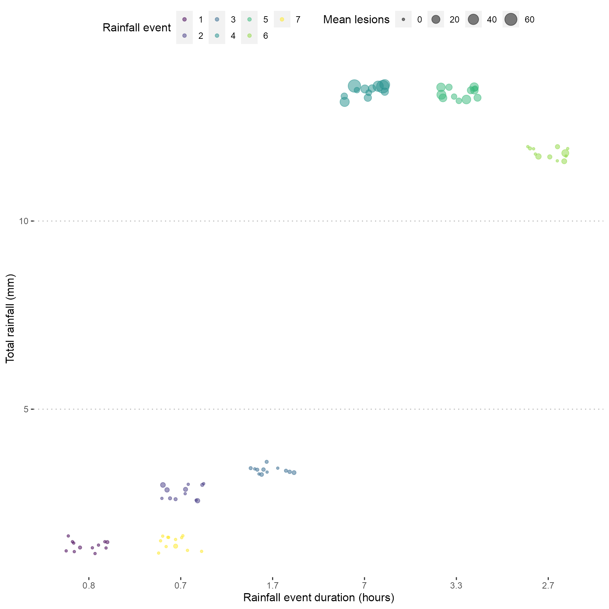

Data visualisation
28/04/2021
a02_Visualise_Data.Rmd
library("readxl")
library("ggplot2")
library("grDevices")
library("dplyr")
library("lubridate")
library("tidyverse")
library("clifro")
library("viridis")
library("showtext")
library("here")
library("ggpubr")
library("patchwork")
library("extrafont")
library("rainy")
library("ggbeeswarm")
library("tidyr")
theme_set(theme_pubclean(base_family = "Arial"))Import data
dat <-
read_excel(
system.file("extdata", "lesion_weather_data.xlsx", package = "rainy"),
sheet = 1,
na = "NA"
) %>%
group_by(rainfall_event) %>%
mutate(date = lubridate::as_date(date)) %>%
mutate(time = format(as.POSIXct(time, "%Y-%m-%d %H:%M:%S", tz = ""),
format = "%H:%M")) %>%
mutate(wind_direction = circular.averaging(wind_direction)) %>%
mutate(wind_direction = as.numeric(wind_direction)) %>%
mutate(rain_duration = as.factor(rain_duration)) %>%
mutate(rainfall_event = as.factor(rainfall_event))Kernel density plots
ggplot(dat, aes(x = mean_lesions)) +
geom_density(fill = "steelblue", alpha = 0.7) +
geom_rug(alpha = 0.4)## Warning: Removed 3779 rows containing non-finite values (stat_density).
xlab("Mean lesions per pot during each rainfall event")## $x
## [1] "Mean lesions per pot during each rainfall event"
##
## attr(,"class")
## [1] "labels"Kernel density plots showing the shape of data distribution. A strong peak at fewer than 35 lesions per pot was observed.
Scatter plot
ggplot(
dat,
aes(
x = rain_duration,
y = total_rain,
colour = rainfall_event,
size = mean_lesions
),
group = rainfall_event
) +
geom_jitter(alpha = 0.5,
width = 0.25) +
scale_colour_viridis_d() +
guides(colour = guide_legend(title = "Rainfall event"),
size = guide_legend(title = "Mean lesions")) +
labs(x = "Rainfall event duration (hours)",
y = "Total rainfall (mm)")## Warning: Removed 3779 rows containing missing values (geom_point).
Violin plot
ggplot(dat, aes(x = rainfall_event,
y = mean_lesions)) +
geom_violin(cex = 0.5, alpha = 0.7, bw = 2.5) +
geom_point(alpha = 0.3, size = 0.5) +
labs(x = "Rainfall event", y = "Mean lesions per pot")## Warning: Removed 3779 rows containing non-finite values (stat_ydensity).## Warning: Removed 3779 rows containing missing values (geom_point).Beeswarm plot
ggplot(dat, aes(x = rain_duration,
y = mean_lesions)) +
geom_beeswarm(cex = 0.5, alpha = 0.8) +
geom_boxplot(alpha = 0) +
labs(x = "Rain duration (hour)", y = "Mean lesions per pot")## Warning: Removed 3779 rows containing non-finite values (stat_boxplot).## Warning: Removed 3779 rows containing missing values (position_beeswarm).
Wind rose
Import wind speed and wind direction data
wind_dat <-
read_excel(system.file("extdata", "wind_data.xlsx", package = "rainy")) %>%
mutate(wind_speed = wind_speed / 3.6) %>%
mutate(wind_direction = as.numeric(wind_direction)) %>%
mutate(wind_speed = as.numeric(wind_speed)) %>%
mutate(rainfall_event = as.factor(rainfall_event))Plot wind rose
fig_4 <-
with(
wind_dat,
windrose(
wind_speed,
wind_direction,
rainfall_event,
n_col = 3,
legend_title = "Wind speed (m/s)"
)
)
fig_4 <-
fig_4 +
scale_fill_viridis_d(name = "Wind Speed (m/s)", direction = -1) +
xlab("") +
theme_pubclean(base_family = "Arial")## Scale for 'fill' is already present. Adding another scale for 'fill', which
## will replace the existing scale.
fig_4